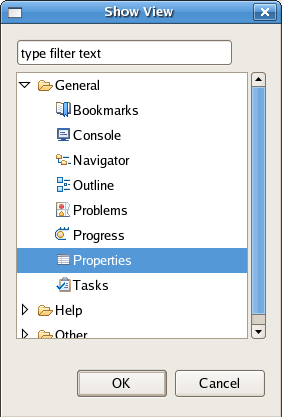

Table of Contents > Reference
Dashboard Perspective Menus
What follows is a comprehension list of the menu options available within the Systemtap GUI Dashboard Perspective.
File
- Import Module Location - This option allows brings up a dialogue box prompting the user with the location of a module file which is then loaded into the Module Browser.

- Exit - Exits Systemtap GUI.
- Run - This option runs the selected module in the Module Browser.
- Pause - This option pauses the selected module in the Module Browser. Know that this method of pausing is an illusion; the graph data is simply not updated while the script continues to run. This inability to truly pause is inherent in SystemTap itself.
- Stop - This option stops the selected module in the Module Browser.
Window
- Open in New Window - This option opens a new instance of SystemTap GUI.
- Open Perspective - This submenu lists each of the available perspectives to open:
- IDE Perspective
- Graphing Perspective
- Dashboard Perspective
- Show Views - This submenus lists each of the available views to open:
- Console
- Error Log
- Functions
- Kernel Source
- Probe Alias
- Other - Lists all views in the application.

- Preferences - Due to the breath of this topic it is covered in another section. Please see Preferences Help.